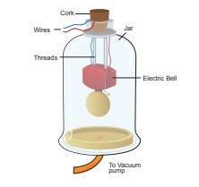
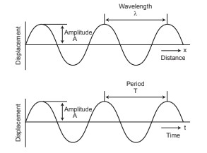
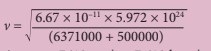
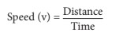
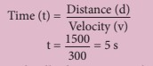

1. Deacribe the bell jar expriment?
Ans: Bell-Jar experiment

Sound needs a material medium like
air, water, steel etc., for its propagation. It
cannot travel through vacuum. This can be
demonstrated by the Bell – Jar experiment.
An electric bell and an airtight glass jar are
taken. The electric bell is suspended inside the
airtight jar. The jar is connected to a vacuum
pump, as shown in Figure 8.1. If the bell is
made to ring, we will be able to hear the sound
of the bell. Now, when the jar is evacuated with
the vacuum pump, the air in the jar is pumped
out gradually and the sound becomes feebler
and feebler. We will not hear any sound, if the
air is fully removed.
2. Explain the Characteristics of sound wave?
Ans : Characteristics of sound wave

A sound wave can be described completely by
five characteristics namely amplitude, frequency,
time period, wavelength and velocity or speed.
Amplitude (A)
The maximum displacement of the particles
of the medium from their original undisturbed
positions, when a wave passes through the
medium is called amplitude of the wave. If the
vibration of a particle has large amplitude, the
sound will be loud and if the vibration has small
amplitude, the sound will be soft. Amplitude is
denoted as A. Its SI unit is meter (m).
Frequency (n)
The number of vibrations (complete waves
or cycles) produced in one second is called
frequency of the wave. It is denoted as n. The SI
unit of frequency is s–1 (or) hertz (Hz). Human
ear can hear sound of frequency from 20 Hz
to 20,000 Hz. Sound with frequency less than
20 Hz is called infrasonic sound. Sound with
frequency greater than 20,000 Hz is called
ultrasonic sound. Human beings cannot hear
infrasonic and ultrasonic sounds.
Time period (T)
The time required to produce one complete
vibration (wave or cycle) is called time period of
the wave. It is denoted as T. The SI unit of time
period is second (s). Frequency and time period
are reciprocal to each other (T = 1
n).
Wavelength (λ)
The minimum distance in which a sound
wave repeats itself is called its wavelength.
In a sound wave, the distance between the
centers of two consecutive compressions or
two consecutive rarefactions is also called
wavelength. The wavelength is usually denoted
as λ (Greek letter, lambda). The SI unit of
wavelength is metre (m).
Velocity or speed (v)
The distance travelled by the sound wave in
one second is called velocity of the sound. The
SI unit of velocity of sound is m s–1.
3. Discuss the Benefits of ISS?
Ans: water-purification
Using the technology developed for the
ISS, areas having water scarcity can gain access
to advanced water filtration and purification
systems. The water recovery system (WRS)
and the oxygen generation system (OGS)
developed
Eye tracking technology
The Eye Tracking Device, built for a
microgravity experiment, has proved ideal to be
used in many laser surgeries.
Robotic arms and surgeries
Robotic arms developed for research in
the ISS are providing significant help to the
surgeons in removing inoperable tumours
(e.g., brain tumours) and taking biopsies with
great accuracies.
Apart from the above-mentioned
applications, there are many other ways in
which the researches that take place in the
ISS are helpful.
1. Applications of ultrasonic waves
Ans: • Ultrasounds can be used in cleaning
technology.
Minute foreign particles can be
removed from objects placed in a liquid bath
through which ultrasound is passed.
• Ultrasounds can also be used to detect
cracks and flaws in metal blocks.
• Ultrasonic waves are made to reflect from
various parts of the heart and form the
image of the heart. This technique is called
‘echo cardiography’.
• Ultrasound may be employed to break
small ‘stones’ formed in the kidney into
fine grains. These grains later get flushed
out with urine.
2. kepler's law
Ans: • First Law – The Law of Ellipses
All planets revolve around the Sun in
elliptical orbits with Sun at one of their foci.
• Second Law – The Law of Equal Areas
The line connecting the planet and the Sun
covers equal areas in equal intervals of time.
• Third Law – The Law of Harmonies
The square of time period of revolution of a
planet around the Sun is directly proportional to the
cube of the distance between sun and the planets.
3. Can you calculate the orbital velocity of a satellite orbiting at an altitude of 500 km?
Ans:
Data: G = 6.673 × 10–11 SI units;
M = 5.972 × 1024 kg;
R = 6371000 m;
h = 500000 m.
Solution:

Ans: v = 7613 ms-1 or 7.613 kms-1
Throughwhichmediumsoundtravels faster, iron or water? Give reason.
Ans.Soundtravelsfasterthrough iron than water.
Reason: The speed of sound depends on the nature of medium. As Iron is a solid, sound travels faster through iron than Water.
Name the physical quantity whose SI unit is 'hertz'.
Ans: The SI unit of Frequency is Hertz. Frequency is the number of waves produced in one second.
What is meant by supersonic speed?
Ans. Supersonic speed is the speed of an object that exceeds the speed of sound in air (330 ms-1).
1. Define echogram?
Ans: An echogram is an image obtained by the use of reflected ultrasonic waves. It is used as a medical diagnostic tool. Ultrasonic sound is having application in marine surveying also.
2. What is meant by ultrasonic soud?
Ans: Ultrasonic sound is the term used for sound waves with frequencies greater than 20,000Hz.
3. What is meant by speed of sound?
The speed of sound is defined as the distance travelled by a sound wave per unit time as it propagates through an elastic medium. 
4. Why do some stars appear blue and some red?
Ans. Stars appear in different colours depending on their temperatures.Hot stars are white or blue in colour. Cooler stars are orange or red in colour.
5. How is a satellite maintained in nearly circular orbit?
Ans. 1. The satellite is carried by a rocket to the desiredheightandreleasedhorizontal with a high velocity.
2. So that it remains moving in a nearly circular orbit.
6. Why are some satellites called geostationary?
Ans. The Earth rotates once in 24 hours, a satellite staysin a fixedposition Because the satellite stays over the samespotallthetime,thiskindoforbitiscalled "geostationary".
7. A man weighing 60 kg in the Earth will weigh 1680 kg in the Sun. Why? Ans. 1. Weight of the object depends upon the gravity of the planet.
The gravity of the sun is 28 times higher than the Earth. So an object with 60 kg in the Earth will weigh 1680 kg (28? 60 = 1680 kg)2 the Sun.
1. A sound wave has a frequency of 2 kHz and wavelength of 15 cm. How much time will it take to travel 1.5 km?
Speed, v = n λ
Here, n = 2 kHz = 2000Hz
λ = 15 cm = 0.15 m
v = 0.15 × 2000 = 300 m s–1

The sound will take 5 s to travel a distance
of 1.5 km.
2. What is the wavelength of a sound wave in air at 20° C with a frequency of 22 MHz?
Solution: λ = v/n Here, v = 344 ms-1. n = 22 MHz = 22 × 106 Hz λ = 344/22 × 106 = 15.64 × 10−6 m = 15.64 μm.